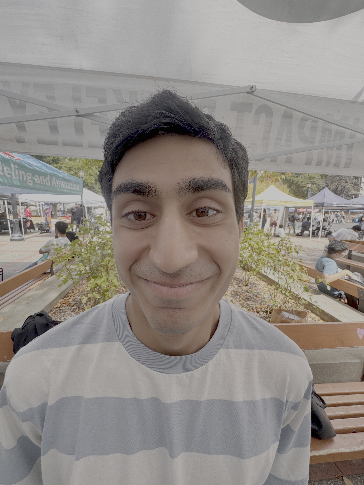
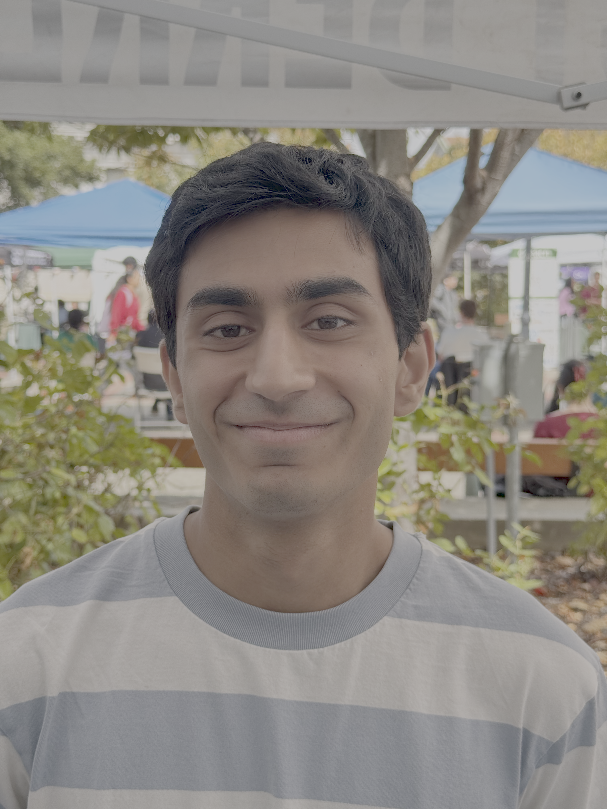
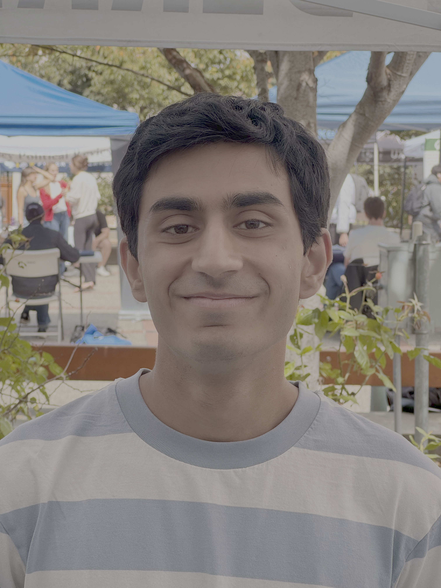
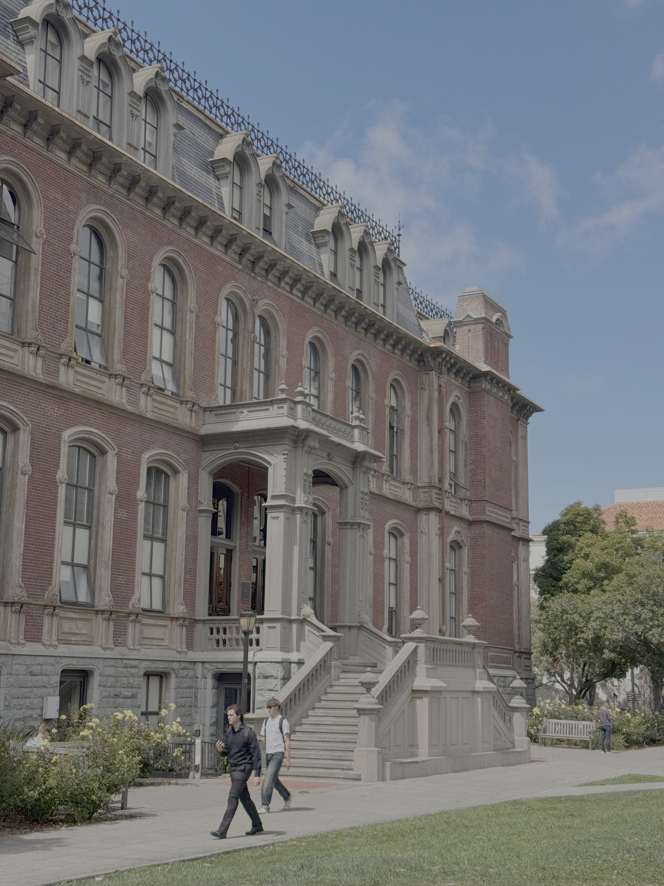
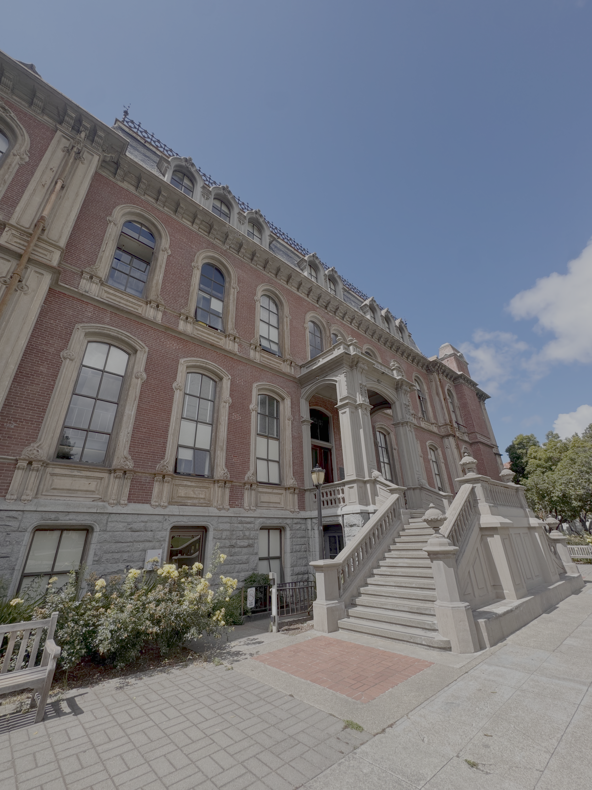
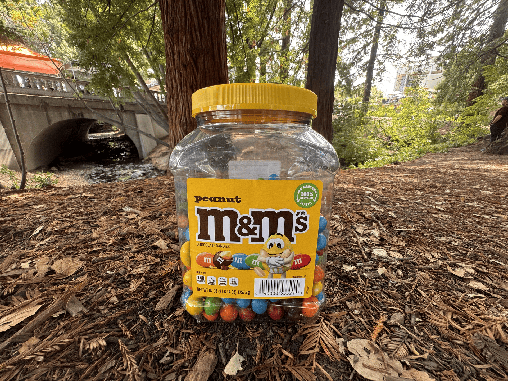

Project 0: Becoming Friends with My Camera :)
Part 1
Four selfies of a blue-shirt Waldo




We see that as focal length decreases, we're able to capture a wider range in the image; the field of view increases. In capturing this expansive area, however, the image heavily distorts the face. Objects closer to the camera and in the center (like the nose) appear prominent, while objects further from the center (like the edge of the face) appear further away. With a larger focal length, the narrower field of view creates less distortion and a more "normal" looking selfie.
Part 2
Distorting the oldest building on campus…



Similar to part 1, we see that as we are further away from the object of interest, the more flat and compressed it looks. In contrast, as we get closer and zoom out, the "diagonals" of the building become more prominent because the field of view is wider.
Part 3
Peanut M&Ms in the wild!

Increased focal length (i.e. more zoom) means we capture less of the object's background, as our field of view is narrower. That's why we go from seeing all of the lovely nature near Dwinelle to only the zoomed-in tree stump in the end. When we zoom in, those other aspects are no longer in the field of view. When we merge these together, and there is less and less of the background in each picture——but the object is still the same size, in the same place——we get the Dolly zoom effect.